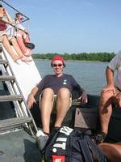
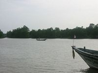

DOCTYPE html>
DOCTYPE html>

DOCTYPE html>
mercredi 28 mai
DOCTYPE html> Le bus de nuit me depose a Surat Thani, ou j'attends le bateau en compagnie de Marissa, une Française qui va a Koh Phan gahn (meme bateau, mais un peu plus loin que Koh Samui). Pendant la traversée, une Thai joviale fait le tour des touristes en proposant ses bungalows a 100 Baht. Le temps de reflechir, et je me retrouve dans un petit bungalow a 100 Baht, avec ventilo et moustiquaire, sur la plage. Pendant le repas, je retrouve un groupe de 4 Canadiens qui étaient sur le bateau.DOCTYPE html> Je fais un tour a Lamai, la ville la plus proche, et je fais la connaissance d'un Suedois, bien bourre, le soir. Les Canadiens rentrent peu après, l'un d'eux à un pansement sur le front : ils ont rencontre un de leurs "amis" dans un bar, qui a pété les plombs et fracasse une bouteille sur le crane du Canadien. Ils rentraient de l'hopital quand je les ai vus.
DOCTYPE html>
jeudi 29 mai
DOCTYPE html> Je me baigne sur la plage en evitant les cailloux, et je decide que j'ai mieux a faire sur terre. Donc je loue une mobylette, et je passe l'après-midi a Chaweng, la grande ville de l'île. J'y visite une galerie de peinture, ou les tableaux sont ranges par genres : imitations de Dali, de Picasso, de Warhol, etc...DOCTYPE html> Le soir, partie de cartes le soir avec Suzanna (Suede), Laura (GB) et un couple d'Allemands ( ?). C'est marrant ça, je ne me rappelle que des 2 filles.
DOCTYPE html>
vendredi 30 mai
DOCTYPE html> Virée a Chaweng avec Suzanna et le Suedois d'avant-hier, plus un de ses potes, Suedois aussi. Bref, nous allons dans un bar Suedois, ecouter des chansons suedoises. C'est a peu près aussi fin que le top 50 allemand, mais tout le monde s'amuse. Une petite Thai vient nous vendre des colliers de fleurs, et elle revient 3,4 fois, au final tout le monde craque. Bien sur il y a d'autres enfants qui viennent nous vendre des colliers, mais la moitie du bar porte ses fleurs rouges. Je suis admiratif.DOCTYPE html> Nous embarquons dans un taxi, un pick-up 4x4 bache, avec des loupiotes de toutes les couleurs, pour la "black moon party". L'île voisine de Koh Phan Gahn etant mondialement celebre pour la fameuse "full moon party", Koh Samui a decide d'occuper le creneau de toutes les autres phases de la lune, avec la "Black moon party", la "Half moon party", et je suis sur egalement la "Two third moon", la "Full moon was yesterday", la "Black moon minus two days", etc...
DOCTYPE html> Dans le taxi, il y à un Americain, complétément bouure (il a encore un verre à la main), il s'emporte contre le monde entier, surtout la France, car on est en pleine guerre du Golfe 2. Suzanne et moi passons notre temps a nous engueuler avec lui, et nous arrivons à la Black Moon très enerves, loin de l'esprit peace and love de rigueur. Bref nous entrons sans payer, sans un regard pour le type avec les billets. Malheureusement, l'ambiance est glauque sur la plage, malgre la decoration sympa, la house degoulinante fait fuir meme les plus motives d'entre nous, et nous rentrons nous coucher en ordre disperse.
DOCTYPE html>
samedi 31 mai
DOCTYPE html> Ce soir, nous allons à un match de boxe thai gratuit sur la place du marche de Lamai. Je retrouverai les autres pendant le match, parce que j'ai decide en secret de m'offrir un super-repas : le surf and turf, c'est-a-dire 3 tiger prawns et un steak bien epais. Je retrouve les Suedois (accompagnes de Laura et du couple d'Allemands) qui s'ennuient ferme autour du match, et nous decidons d'aller a Chaweng (encore) ou nous rencontrons un Anglais qui possede un bar sur l'île (en fait, a 300m de nos bungalows). Il ouvre le bar, il est passe minuit et le quartier est desert. Les serveuses qui dormaient derriere le comptoir sont reveillées et l'alcool coule a flots.DOCTYPE html>
dimanche 1er juin
DOCTYPE html> Je n'ai meme pas le temps de dire au revoir, je prends le bateau pour Surat Thani a midi, pendant que nous attendons le bus pour Bangkok, des travellers utilisent leur telephone portable : autant pour le depaysement.DOCTYPE html>
DOCTYPE html>